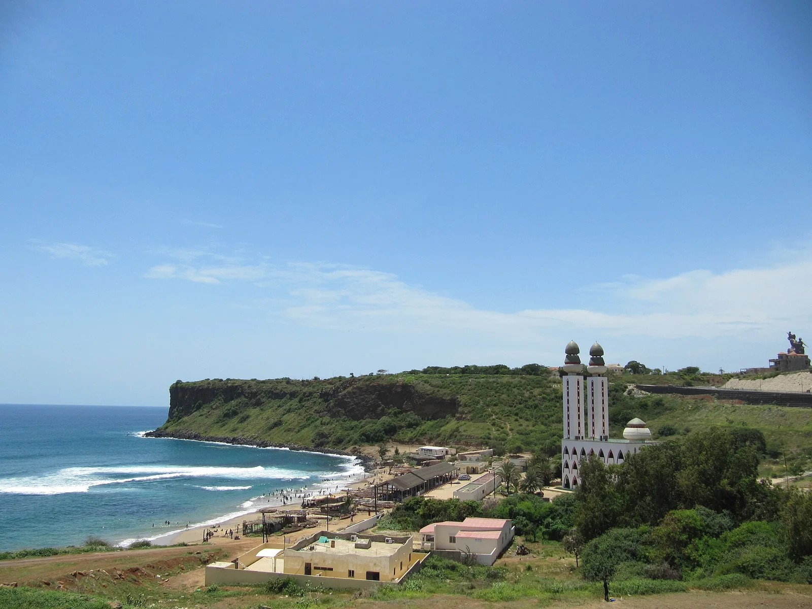

Ouakam
Dakar, Sénégal · surf, bodyboard

Une gauche puissante qui casse sur le récif au pied de la mosquée de la Divinité, dans une baie encaissée de Dakar.
- Lieu
- Dakar, Sénégal
- Niveau
- Expert
- Activités
- surf, bodyboard
- Type d'eau
- Mer / océan
- Coordonnées
- 14.72, -17.49 (position approximative du secteur)
Dangers à connaître
- Récif tranchant, très peu d’eau à marée basse.
- Courant de sortie dans la baie.
- Vague creuse dès que la houle monte.
Le conseil d'Ocean Buddy
Entre et sors par le côté droit de la baie, là où le courant t’aide.
Ouvrir dans Ocean Buddy Télécharger sur l'App Store
Source : Description historique Ocean Buddy · vérification externe en attente.